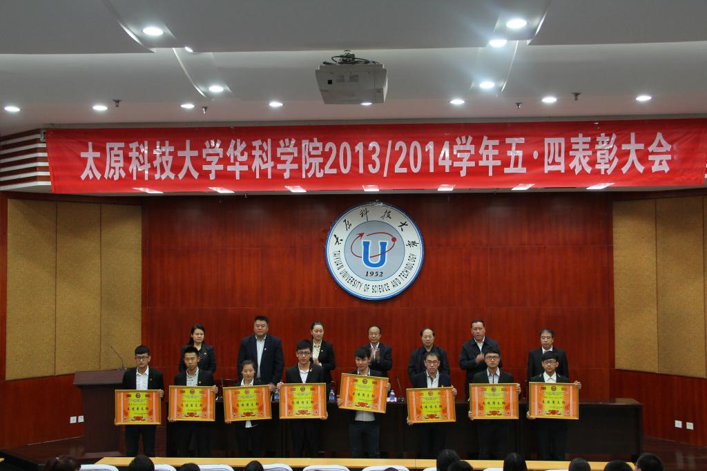
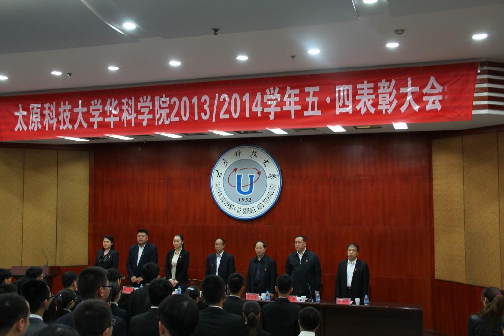

华科学院召开2013/2014学年五•四表彰大会
时间：2014-5-6 19:04:292013年5月4日，华科学院在图书馆6层报告厅召开五•四表彰大会。大会对2013/2014学年中涌现出的二十六个先进团支部、十名“五·四”优秀青年、三十八名优秀团学干部、一百二十九名优秀团员、二十六名优秀青年志愿者、二十六名校园文化建设积极分子进行表彰，对他们在学习、工作中的出色表现给予肯定和奖励。
校党委副书记张飞代表校党委向全院广大团员青年致以节日的问候！向受到表彰的先进集体和优秀个人表示热烈的祝贺！向辛勤工作在团学工作第一线的团学干部表示崇高的敬意！

张书记充分肯定了华科学院团委一年来在思想建设、组织建设和校园文化建设等方面取得的成绩，回顾了共青团92年的光荣岁月，指出当代青年有幸成长在无比接近中华民族伟大复兴宏伟目标的新时代，必将历史地接过实现“中国梦”的接力棒，担当起时代重任；并向广大团员青年提出三点殷切希望：要继承和发扬伟大的“五四”精神，坚定理想信念，练就过硬本领，注重品德修养，做一名无愧于伟大时代、无愧于光荣称号的有为青年。
最后，学院党委书记贾月顺在主持会议时指出：习近平总书记给河北保定学院西部支教者代表的回信及11名维吾尔族大学生针对新疆暴恐事件共同署名的公开信，折射了当代青年的担当精神和强烈的正义情怀，希望全院共青团员弘扬五四精神，立足本职岗位，认真学习，努力工作，肩负起时代赋予的重任，在时代的洪流中书写更加精彩的人生！

校党委副书记张飞、副校长柴跃生、校团委书记王平平、学院党委书记贾月顺、学院院长韩刚、学院党委副书记兼副院长张雅琴、学院副院长白尚旺出席了本次大会。
大会由学院党委书记贾月顺主持。